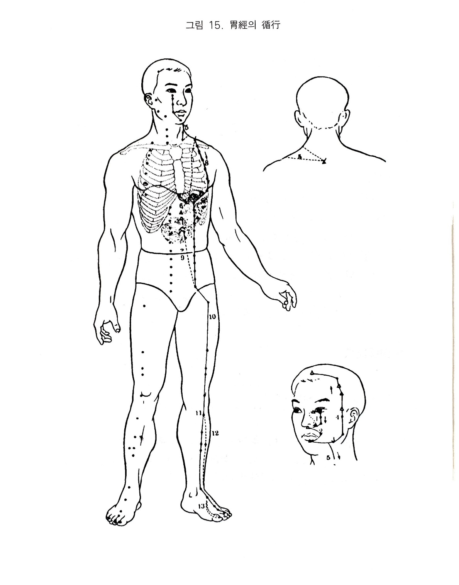

족태양위경
6. 족양명위경
1) 족양명위경의 순행
위의 경맥은 비양방 영향(대장경에서 이어짐)에서 시작하여 비근부로 상행한 후 좌우가 교회하고 청명(방광경)을 지나 하향하여 비의 외측을 따라 상치중으로 진입해서 지창으로 나와 구각을 한바퀴 돌아 임맥의 승장과 교회한다. 퇴전해서 하함의 후하방의 대영을 지나 협차를 따라 이전으로 올라와서 객주인(담경)과 교회하고 두유에 이른다. 여기서 다시 독맥의 신정에 이른다. 본경은 대영전방에 결분을 거쳐 직하하여 유중.유근을 지나 계근하 부용에 이르러 임맥양방으로 2촌 내려가 기충에 이른다. 기충에서 대퇴의 전외측을 지나 슬개골 아래로 들어가서 하퇴의 전외측을 통과하여 족배에 이르러 족이지의 조갑근부의 외측에서 끝난다.
하나의 분락은 대영의 전방에서 하행하여 인영을 지나 결분에서 유선과 흉골 사이로 하행해서 위에 속하고 비에 락한다. 이 지락은 위하구에서 복강을 지나 하행해서 기충부에 이어져 직행하는 본경과 교회한다. 또 하나의 지락은 족삼리에서 하행하여 족중지의 외단에 이르고 도 하나는 족배의 충양혈에서 갈라져 모지. 은백에 이른다.
2) 위경의 병증
(1) 호흡기계
위에 원래 한기가 있는데 곡기가 들어가니 한기와 곡기가 서로 부딪쳐서 달꾹질이 난다.
위의 양기가 울체되면 기지개를 피고 자주 하품을 하는데 이는 양기를 끌어올리고자 하는 것이다.
음기가 상승하여 위에 들어오면 위경이 심중에 연걸되어 있어 트림과 하품을 한다.
양성한데 음기가 가해지면 냉수를 뿌리듯이 오싹오싹하고 위양이 허하면 몸을 떨고 턱을 까불게 된다. 위기열로 심한 학질이나 장티푸스와 같은 고열이 생긴다. 양명경이 신체의 전면을 지나니 허냉하면 전신이 추워 떨고, 고열이 있으면 열이 난다.
상한 2일에 양명경에서 사기를 감수하면 신열이 난다.
위기가 성하면 음기가 하강했다가 다시 상역하므로 숨이 가쁘다.
(2) 소화기계
위는 창고와 같아 여러 가지를 간직하고 있다.
위경이 임맥의 2총방을 복부로 내려가고 있고, 그 지락이 상완. 중완을 지나 위에 속하고 비에 락하고 있다. 다시 위하부에서 하행하여 기충에 이어져 있으므로 사기가 이 경락에 침입하면 소화불량. 구토. 복장. 징가. 장호. 변비가 된다.
위에 실열이 있으면 토혈도 되고 장출혈하여 중소도 된다.
위는 수곡지해이며 비는 소화지기이고, 위는 양명조열지경이며 비는 태음습토지경이다. 그러므로 위장병 중에 열이 있어 빠른 맥과 장에 열이 있어 변비. 흉민한 것 및 신경의 열이 있는 위장병은 위경에서 다스리고 이와 반대로 맥에 한습이 있어 지맥한 것과 장에 한습이 있어 발생한 설사. 장호. 복장한 위장병은 비경에서 다스려야 된다.
(3) 순환기계
위경의 비양방에서 시작하여 비근부 - 청명 - 비외측하향 - 상치 - 구진 - 하렴 - 이전상향 - 두유로 돌고 있어 전안면을 거의 순환한다. 그러므로 풍사가 이 경락에 침입하면 구안와사가 된다.
(4) 흉협복통류
위경이 결분에서 유중으로 하향하고 그 락이 중완. 상완으로 이어지며, 그표리관계인 비경의 락이 흉중에 이어져 있으니 심복통이 오며 흉격이 막히고 결분에서 복근까지 땅기게 된다.
(5) 운동기계
위경이 대영 전방에서 결분을 거쳐 직하하여 기충에서 다시 대영의 전외측을 지나 슬개골하에 들어간 후 하퇴의 전외측을 거쳐 족배에 이른 다음 족이지에서 끝나니 경. 협격. 유. 고. 복토간외렴. 슿 등에 동통이 오고, 허하면 야위며, 실열에 붓고 복수도 생긴다.
(6) 안이비인후구계
위경락이 인후를 지나고 있으므로 사기가 있으면 목이 막히고 음성이 나오지 않는다.
위는 기육을 자양하는데 허냉으로 주리가 성글게 되면 눈물이 난다.
위경에 열이 있으면 그 경락이 영향에서 시작되므로 뉵혈이 나고 비위의 오액이 연이므로 위열에 멀건 침이 흐른다.
구진은 위의 규로서, 위열이 있으면 입이 마르고 입술에 창이 생긴다.
허한에는 근이 긴장되어 눈이 감기지 않고, 열성에는 근이 이완되어 눈을 뜨지 못한다.
상한 2일 양명경에 열사가 침입하면 목통. 비건이 생긴다.
(7) 비뇨기. 생식기계
유산은 음낭의 종대로서 습열이 원인이다.
위가 허한해지면 수곡지정을 보내지 못하니 소변이 잘 나오지 않고 실열이 있으면 소변이 황색이 된다.
(8) 정신계
위의 양기는 쇠진하면 음기가 성하니 폐문불출한다.
위는 기육을 자양하니 심하게 허하면 몸이 나른해지고 기운이 없어진다.
양명기운이 순조롭게 순환되지 않으면 눕지 못하고 불안해한다.
양이 성하면 사지가 실하고 실하면 높은데 올라 노래부르고 미치며 헛소리를 하고, 신열이 성하면 옷을 벗고 달리기도 한다.
상한 2일 양명경에 열사를 감수하면 목통비건하여 눕지 못한다.
(9) 기타
위기는 양기. 한기로서 위기가 되는데 위기의 한열이 태과하면 상행하여 면적. 면열이 된다.
양명은 조열지경이므로 이 경락이 얼굴을 돌기에 적색이 되면서 열이 난다.
위경에 풍사가 있으면 얼굴이 붓고 목에서 땀이 난다.
한출하는 것은 위기의 열이 증발해서 수액이 되므로 한출하는 것이다.
양명경이 유를 주관하며 경락이 통과되어 있으사기가 돌면 유통한다.

오수혈
여태(정,금)
발톱이 박혀있는 뿌리 부분의 양쪽에는 각진 곳이 있다. 여태혈은 둘째 발가락의 바깥쪽(소지측)의 각진 곳에서 약1푼 가량 떨어진 곳으로 침은 옆으로 찌른다. 오목가슴이나 배가 부었을 때, 황달기나 식욕이 없는 위증상, 복수에도 쓰여지지만 정혈(여태-정금혈)은 급성증세에 특효가 있는 극혈과 같은
성능이 있으므로 위관계의 급성증상에 사혈하므로서 특효가 있는 혈이며 광증이나 시궐(가사상태) 즉 기절했을 때에도 쓰이고 얼굴이 붓거나 입이 돌아가는 과사, 뉵혈, 치통, 수족의 냉증에 쓰이기도 한다.
내정(형,수)
제2지의 외측을 본관절 쪽으로 밀어 올라가면 관절 앞쪽에 걸리는 곳이 제2지본관절의 외측전함중으로 이곳이 내정이요 관절을 넘어서서 발목쪽의 함중이 함곡혈이 된다. 배가 붓고 설사하는 경우나 식중독 등에도 좋은 혈이며 입이 삐뚤어지는 구안와사, 치통 외에 수족이 끝에서 부터 차거워지는 증세에도 쓴다.
함곡(수,목)
제2지본관절의 외측(새끼발가락쪽) 후함중이므로 충양혈에서 제2중족골 외연을 발가락쪽으로 밀어가면 뼈가 굵어 지면서 손 끝이 걸리는 자리가 함곡혈이다. 얼굴이 붓거나배가 끓으면서 아픈 경우. 열병을 앓으면서 땀이 안날 때 등 여러가지로 쓰여지나 발바닥이 마쳐서 못 다달 때 이 혈을 심자하면 잘 듣는다.
본혈은 토경중의 목혈이므로 담의 기상을 간직하고 있어 목극토나 토매목의 상관관계로서 소화기장해가 생기면 이곳이 적격한 오행보사혈이 된다.
해계(경,화)
족관절의 전면을 만져보면 두 개의 굵은 힘줄이 만져지고 그 중간에 나왔다 들어갔다 하는 작은 힘줄이 있으니 굴신하여 보면 알 수 있다. 엄지 발가락 쪽의 굵은 힘줄이 경골근이요, 새끼발가락 쪽의 힘줄이 장지신근이며, 가운데 있는 힘줄이 장모신근인데 해계혈은 장모신근의 바깥쪽 다리뼈와 발뼈의 사이인 뼈짬이 된다.
4지의 통증이나 무력증, 전두통, 소화장애 등의 위허증에 보혈로 쓰이며 위경의 변동에서 생기는 전간, 광증, 히스테리 등의 뇌증상에도 유효하고 발목을 삐었을 때의 족관절 염좌에도 쓰인다.
족삼리(합,토)
무릎을 반쯤 구부리고 정갱이뼈의 전면 칼날 같이 되어 있는 능선을 더듬어 올라가면 그 상첨에 뼈가 굵어진 곳에 손가락이 걸린다. 그곳에서 바깥쪽으로 약1촌되는 곳이며 경골과 비골의 사이로서 이곳을 누르면 발등이 멍해져서 부상동맥이 잠깐 멎는 것을 느낄 수 있다. 자기의 삼리혈을 취혈 하려면 손아귀로
종지뼈를 쥐고 다섯 손가락을 아래로 내려뜨려서 그 중지단이 닿는 곳을 삼리로 보기도 한다. 산, 고, 감, 신, 함의 지오미 즉 음식물을 수용하여 오장지기를 조성하는 중앙 위토경의 토혈로서 오장의 기능도 조절하지만 오장의 기능상 변화인 의(심), 해(폐), 어(간), 탄(비), 흠(신) 등의 병적증후도 바로 잡을 수 있으므로
고래로 만병통치혈 내지 무병장수혈로까지 칭송되는 명혈이다. 인두, 식도, 비위, 간담, 대소장 등 소화기계 전반에 유효하고 호흡기계화 심장관계는 토생금, 화생토인 모자관계로서 밀접한 관계하에 있으므로 완만한 영양의 조성 공급면에서도 적혈이지만 신열이나 상기제어 등 심. 폐질환을 조절하는 요혈이기도 하다. 양열지부인
위경의 시동병으로서 옷을 벗어 붙이고 달아나서 높은 곳에 올라가 노래부르는 광증이나 관격이 심해서 오는 후유증으로서의 정신이상, 히스테리, 신경쇠약 등 정신계질환에도 좋은 혈이다. 이러한 경우 식욕의 이상감퇴 내지 항진, 음식의 변질에도 구속됨이 없는 부수증상이 뒤따르는 것이나 설사 기타의 소화장애가 생기더라도
이는 병세가 좋아지는 잠정적인 증세인 때가 많다. 대장경이나 위경의 소위 수족양명경의 경과부위인 눈이나 콧병과 입이 돌아가는 구안와사의 치료점도 된다. 사지는 비위속으로 중풍, 반신불수 등 불인증상이나 팔. 다리의 통증, 마비, 관절의 통증에도 쓰인다. 뇌충혈인 경우에 곡지, 현종 등 혈과 같이 기혈을 인하시킬 수 있고
뇌빈혈인 때는 기혈의 환원을 목적으로 곡지, 합곡 등 혈과 같이 쓰이기도 하나 문제는 삼리혈 하나를 가지고 그 수기여하로서 기혈을 상승시킬 수 있고 하락시킬 수 있느냐 없느냐에 그 사람의 침술경지를 가름하는 바로메타라 하겠다. 진나라 승조도 삼리혈로서 제병개치라 하였지만, 일본전기에 의하면 강호막부시대에 삼하국에
살던 만평이라는 백성은 242세를 장수 하였고 그 아들 손자까지도 삼리구로서 200세 내외를 생종하였다고 전한다. 기타 외치비요에서는 30세가 넘어서 삼리에 뜸을 뜨지 않으면 혈압의 상충이 있다 하였고, 이동단설에도 음식불하이나 심신의 과로에 삼리혈의 긴요성을 강조 하였으나 지나친 허로상태나 상열하한 등에 삼리를 잘못쓰면 해가 된다 하였다.